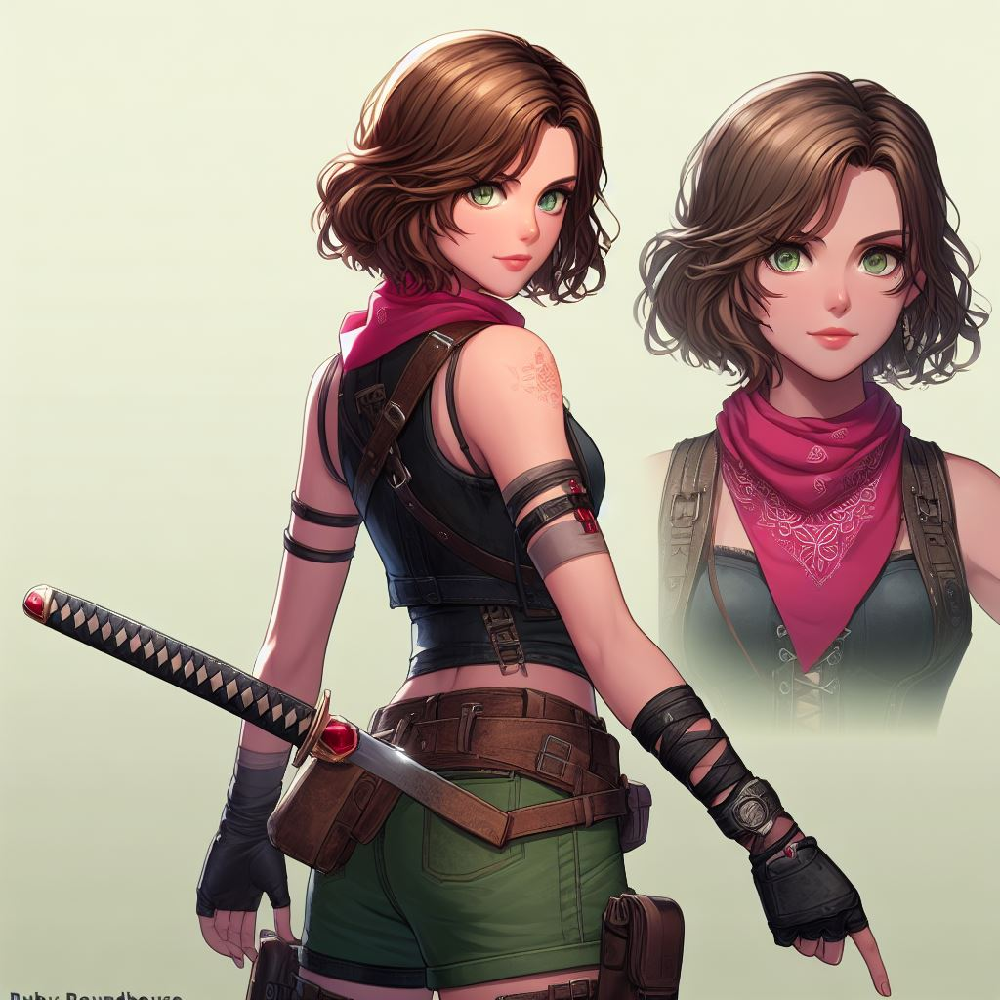

Ao completar seus 18 anos seguiu os passos de seu tio e virou uma caçadora de tesouro,e viveu diversas aventuras e construiu sua história,em uma das suas aventuras no Canadá ela recebeu uma carta de sua tia Angela, que dizia algo triste para Ruby,seu pai tinha falecido após levar um tiro de um homem desconhecido que tinha invadido sua casa atrás de uma peça preciosa.
Ruby Roundhouse começa a caçar o homem que assasinou seu pai determinada a descobrir o por que ele fez isso,ao chegar em sua casa ela acha uma carta desse tal homem,ele marca um ponto de encotro em sua base secreta,ao chegar lá ela encontra o sujeito,os dois olham firmes um para o outro até que ela começa a lutar com ele e usa todas suas habilidades,ele também usa suas forças mais acaba se entregando,Ruby sem piedade com toda sua raiva o mata.
Mau sabia que aquilo tudo era apenas uma distração para que o verdadeiro chefe da mafia fugisse,por conta disso foi tão fácil assim,o chefe era forte e poderoso,e apartir do momento que Ruby segue atrás deste tesouro,o chefe da mafia começa a perseguir ela pois seu colar é a chave para o tesouro.Emfim a guerra começa quem será que vai conseguir o tesouro e ganhar este jogo?...
NOME:Ruby Roundhouse
APARENCIA:pele clara,olhos castanhos claros,cabelo curto ondulado,1,65 de altura.
HABILIDADES:Karate,Aikido
NATURALIDADE:Nasceu no EUA,mais passou a morar na espanha com seu pai na cidade de Servilha quando tinha 10 anos.Nasceu no dia 18 de setembro de 1999.
CARACTERISTICAS ESPECIFICAS:Uma caçadora de tesouro,tem uma bandana amarrada no pulso esquerdo,um colar de Rubi,uma espada japonesa (katana), usa uma gargantilha,croppet bordo,shorts cargo verde,botas,luvas de dedos,e um colete de couro.
